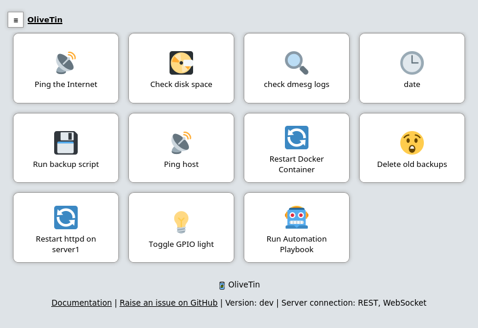
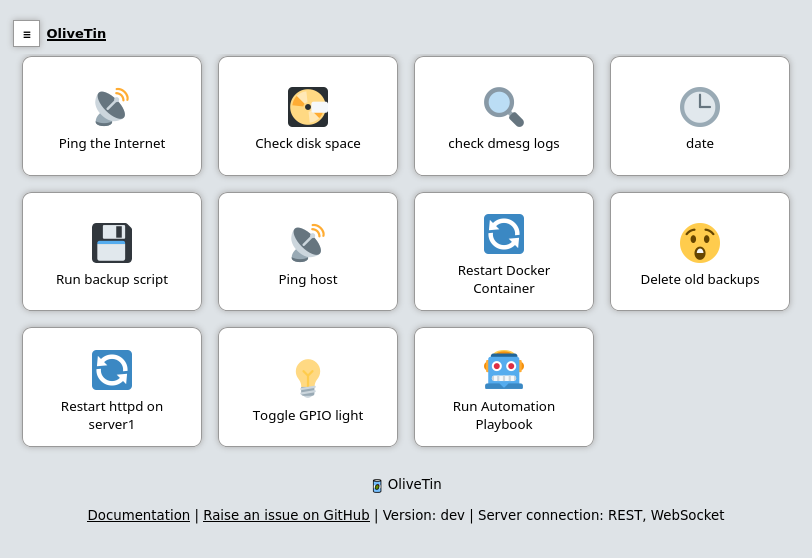

OliveTin
OliveTin is a simple web interface for running Linux shell commands.
 

See it in action more with some OliveTin demo videos on YouTube.
Use cases
- Give controlled access to run shell commands to less technical folks who cannot be trusted with SSH. I use this so my family can podman restart plex without asking me, and without giving them shell access!
- Great for home automation tablets stuck on walls around your house - I use this to turn Hue lights on and off for example.
- Sometimes SSH access isn’t possible to a server, or you are feeling too lazy to type a long command you run regularly! I use this to send Wake on Lan commands to servers around my house.
Features
- Responsive - great for tablets and mobile, with a touch-friendly UI
- Super simple config in YAML - because if it’s not YAML now-a-days, it’s not "cloud native" :-)
- Dark mode - for those of you that roll that way.
- Accessible - passes all the accessibility checks in Firefox, and issues with accessibility are taken seriously.
- Container - available for quickly testing and getting it up and running, great for the selfhosted community.
- Integrate with anything - OliveTin just runs Linux shell commands, so theoretially you could integrate with a bunch of stuff just by using curl, ping, etc. However, writing your own shell scripts is a great way to extend OliveTin.
- Lightweight on resources - uses only a few MB of RAM and barely any CPU. Written in Go, with a web interface written as a modern, responsive, Single Page App that uses the REST/gRPC API.
- Good amount of unit tests and style checks - helps potential contributors be consistent, and helps with maintainability.
Download
Downloads can be found on the GitHub project releases page.